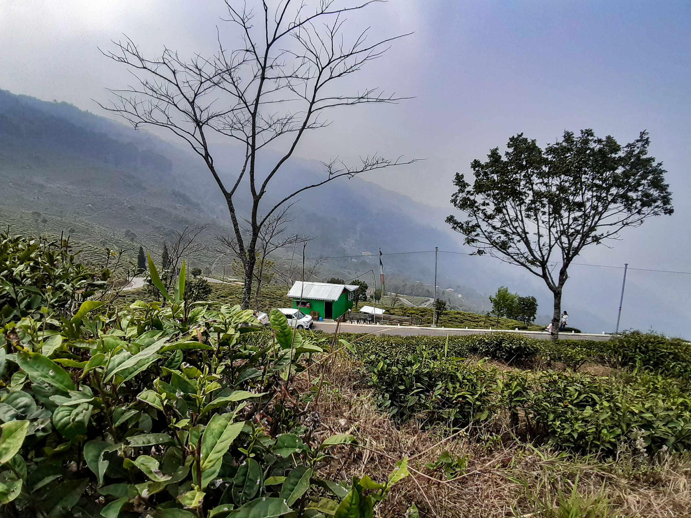
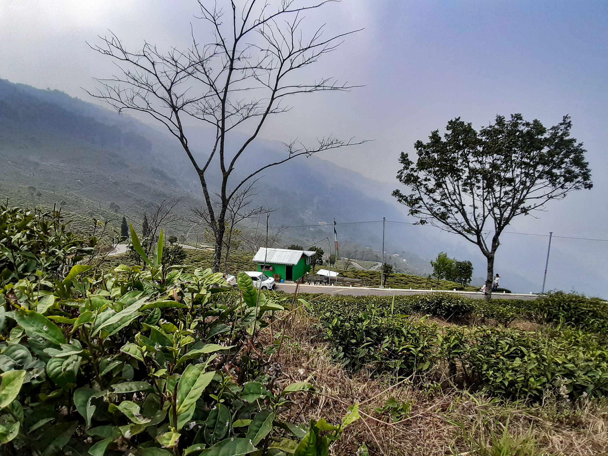
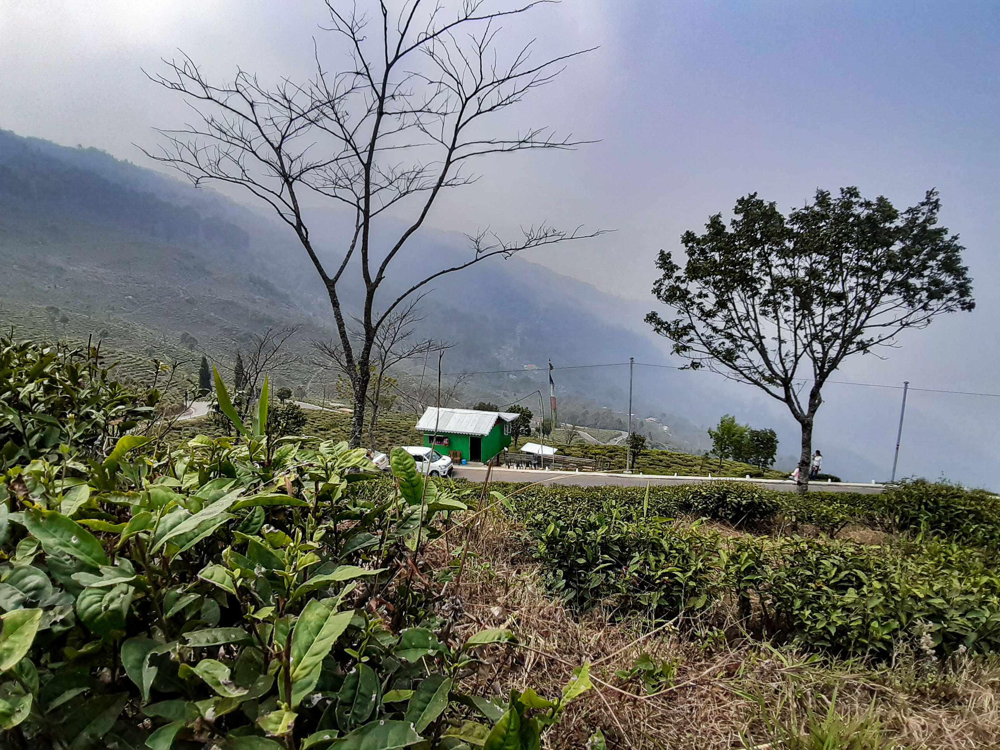

Gallery

 

Tour help for Darjeeling along with my own personal experiences.
Darjeeling is a hill station in the Indian state of West Bengal. It is located in the Eastern Himalayas, at an average elevation of 6,709 feet (2,045 m). Darjeeling is famous for its tea plantations, which produce some of the finest tea in the world. The city is also known for its scenic beauty, with stunning views of the Himalayas, including Mount Kanchenjunga, the third highest mountain in the world.
Darjeeling was founded in the early 19th century by the British East India Company. The company was looking for a place to grow tea, and Darjeeling's climate and soil were ideal for tea cultivation. The first tea plantation in Darjeeling was established in 1856. Today, there are over 80 tea plantations in the Darjeeling district.
In addition to tea, Darjeeling is also known for its handicrafts, including textiles, woodcarvings, and jewelry. The city is also home to a number of schools and colleges, including the Government College of Darjeeling, which was founded in 1864.
Darjeeling is a popular tourist destination, and the city's economy is largely based on tourism. The peak tourist seasons are April to June and September to November.
Here are some additional facts about Darjeeling:
| Catergory | Cost(in INR) |
|---|---|
| Travelling | 5000 |
| Food and lodging | 5000 |
| Misllaneous | 1000 |
| Total | 11000 |
Note: Keep in mind.
Gallery
